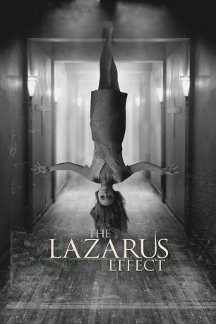
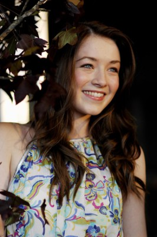

#1936 The Lazarus Effect
 gesehen am 26.01.2016
gesehen am 26.01.2016
 
 IMDB-Wertung: 5.2 / 10
IMDB-Wertung: 5.2 / 10  Metascore: 31
Metascore: 31 
Zoe wird von grausamen Albträumen geplagt. Sie, ihr Freund Frank und die anderen Wissenschaftler in ihrer Gruppe erforschen das menschliche Gehirn, wollen eine Möglichkeit finden, den Tod zu besiegen. Dazu machen die Forscher Tierversuche. Sie benutzen ein Serum, um tote Hunde zum Leben zu erwecken – und es funktioniert. Zoe stirbt, das Team steht unter Schock. Frank entscheidet daraufhin, die gesammelten Erkenntnisse dazu einzusetzen, die Verstorbene wiederzubeleben. Der gewagte Plan gelingt, die junge Frau kommt tatsächlich von den Toten zurück. Doch sie ist danach nicht mehr dieselbe Person wie früher. Etwas scheint ganz und gar nicht in Ordnung mit ihr. Mehr und mehr verfestigt sich die Erkenntnis, dass Zoe von dunklen, tödlichen Kräften erfasst wurde. Jetzt ist sie eine Gefahr für alle Menschen in ihrer Umgebung...
Jahr: 2015
Dauer: 83 Minuten
FSK: 16
Land: USA Studio: Relativity StudiosTonspuren: DTS - ,
Untertitel: Deutsch,
Auflösung: 1080p (1920x800) Größe: 3543 MB
Genre: Thriller, Horror, Sci-Fi
Regisseur: David Gelb
Drehbuch: Luke Dawson, Jeremy Slater
Soundtrack: Sarah Schachner
Darsteller:
 Mark Duplass als Frank
Mark Duplass als Frank Olivia Wilde als Zoe
Olivia Wilde als Zoe-  Sarah Bolger als Eva
 Evan Peters als Clay
Evan Peters als Clay Donald Glover als Niko
Donald Glover als Niko Ray Wise als Mr. Wallace
Ray Wise als Mr. Wallace- Scott Sheldon als Security Guard
- Emily Kelavos als Little Girl
- James Earl als Security Guard Terrence
 Amy Aquino als President Dalley
Amy Aquino als President Dalley- Sean T. Krishnan als Lawyer
- Ator Tamras als Burned Figure
- Cato als Rocky the Dog
- Jennifer Floyd als Firefighter , uncredited
 Bruno Gunn als Fireman , uncredited
Bruno Gunn als Fireman , uncredited- Scott L. Treger als Living Cadaver , uncredited
Datei: X:\2015(G-M)\Lazarus Effect, The (2015, FSK, 1920x800).mkv seit 05.09.2015
Festplatte: HD 2015(A-Z)
 Es gibt insgesamt 129 Filme in der Gruppe '2015(G-M)'
Es gibt insgesamt 129 Filme in der Gruppe '2015(G-M)'